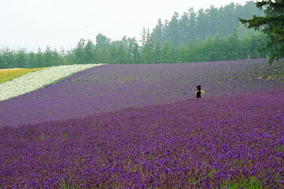
日本风景 · 摄影来源
本页收录旅行灵感画廊的摄影作品、作者及许可。照片由所列摄影师创作；并非站主亲自拍摄或已完成的旅行记录。
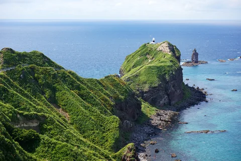
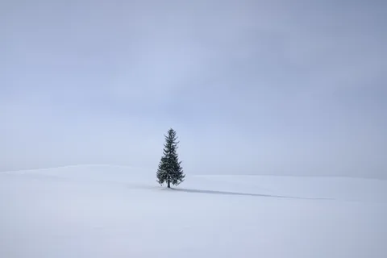
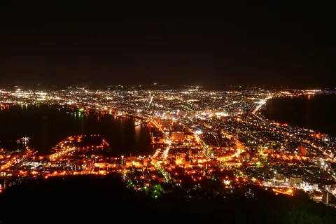
北海道 · 函馆山
两片海之间的灯火
MaedaAkihiko · CC BY-SA 4.0
按原比例缩放与 WebP 编码；未放大、未去除水印。画廊缩略图采用展示裁切，放大浏览保留完整画面。相关版本沿用上列照片许可。
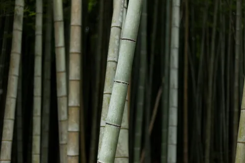
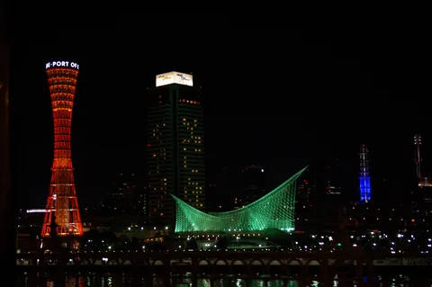
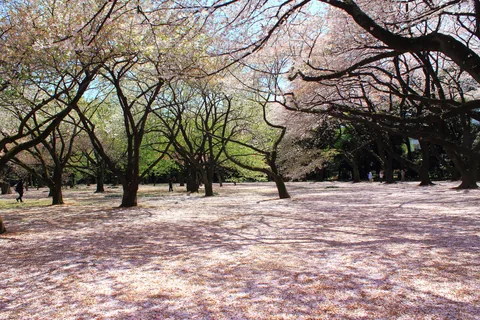
东京 · 新宿御苑
新宿御苑的樱花
Kakidai · CC BY-SA 3.0
按原比例缩放与 WebP 编码；未放大、未去除水印。画廊缩略图采用展示裁切，放大浏览保留完整画面。相关版本沿用上列照片许可。
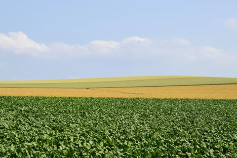
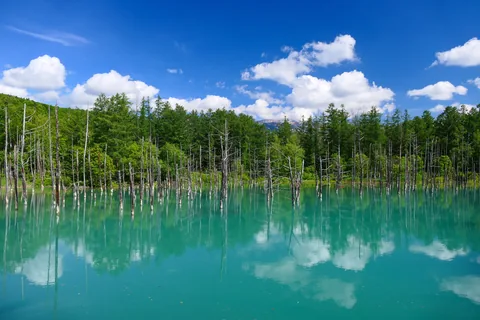
北海道 · 美瑛
白金青池
MaedaAkihiko · CC BY-SA 4.0
按原比例缩放与 WebP 编码；未放大、未去除水印。画廊缩略图采用展示裁切，放大浏览保留完整画面。相关版本沿用上列照片许可。
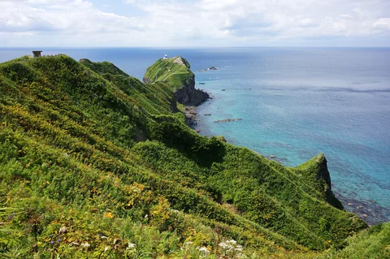
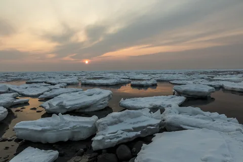
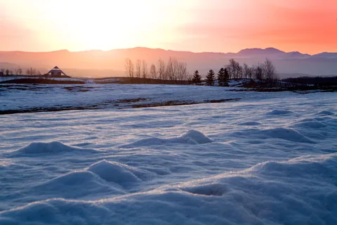
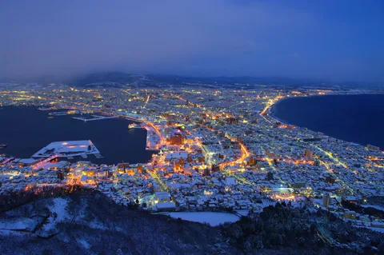
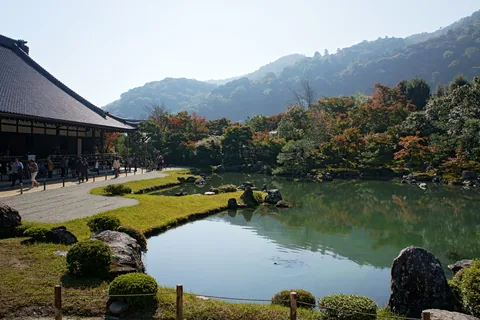
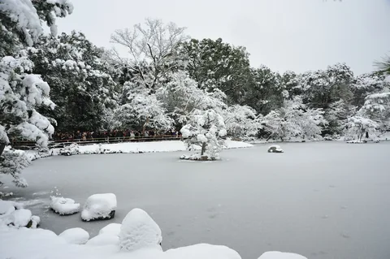
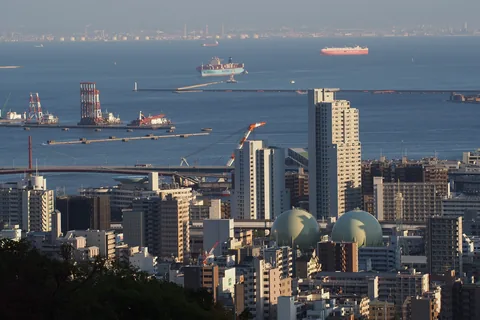
神户 · 布引
从山上望见神户
harum.koh · CC BY-SA 2.0
按原比例缩放与 WebP 编码；未放大、未去除水印。画廊缩略图采用展示裁切，放大浏览保留完整画面。相关版本沿用上列照片许可。
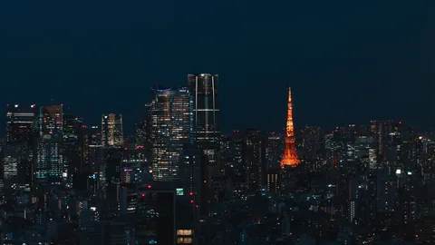
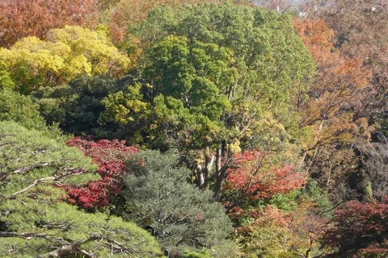
东京 · 六义园
六义园的秋色
Ethan Doyle White · CC BY-SA 4.0
按原比例缩放与 WebP 编码；未放大、未去除水印。画廊缩略图采用展示裁切，放大浏览保留完整画面。相关版本沿用上列照片许可。